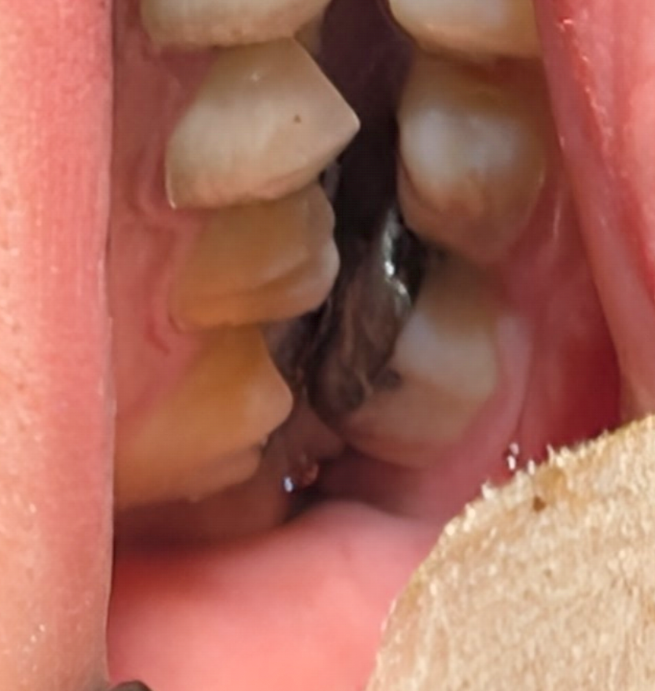

Insight — اگر کار میکنه، بذار کار کنه

clinical insight
هر الگوی «غیرایدهآل» لزوماً بیمار نیست؛ گاهی بهترین درمان، درمان نکردن است.
در این بیمار، فک در حرکات طرفی روی مولر سوم سوپرااِراپت کاملاً دیسکلود میشد؛ تداخلی واضح و از نظر کتابی یکی از بدترین نقاط تماس.
اما نکتهٔ مهم این بود: بیمار هیچ علامتی نداشت.
1️⃣ بررسی وضعیت بیمار: سیستم پایدار و بدون علامت
بیمار علائم زیر را نداشت:
- درد عضله
- صدای مفصل
- احساس گیر
- آگاهی اکلوژنی
سیستم فکی-عضلانی او با همین الگوی «غیرایدهآل» سالهاست پایدار مانده است.
2️⃣ رویکرد بالینی: اکلوژن، فقط اصلاح کتابی نیست
در چنین شرایطی تجربهی بالینی میگوید:
هر الگوی «غیرایدهآل» لزوماً بیمار نیست؛ گاهی بدن راه خودش را پیدا کرده.
3️⃣ ریسک مداخله در سیستم پایدار
بله—اگر دندان عقل کشیده میشد، تداخل حذف میشد. اما هدف در اکلوژن «کتابی کردن» نیست؛ جلوگیری از ایجاد مشکل بیدلیل است.
دستزدن به تنها نقطهی سالها پایدار، میتواند بیمار بیعلامت را تبدیل به:
- بیمار آگاه به اکلوژن
- با حساسیت دائمی
- و وارد چرخهٔ درمانهای بیپایان
4️⃣ عواقب آگاهی به اکلوژن
برگشت از این آگاهی، بسیار سختتر از رها کردن سیستم پایدار فعلی است:
- وسواس
- ریسک درمانهای بیهدف
- هزینه و استرس اضافی برای بیمار
️ جمعبندی نهایی
با توجه به:
- عدم وجود هرگونه علامت TMD یا عضلانی
- پایداری بلندمدت سیستم اکلوژن
- ریسک بالا با مداخلهٔ غیرضروری
بهترین طرح درمان: عدم مداخله
گاهی بهترین درمان، درمان نکردن است. اگر کار میکنه، بذار کار کنه.
محتوای این صفحه برای استفادهٔ آموزشی دندانپزشکان و دانشجویان دندانپزشکی تهیه شده است.